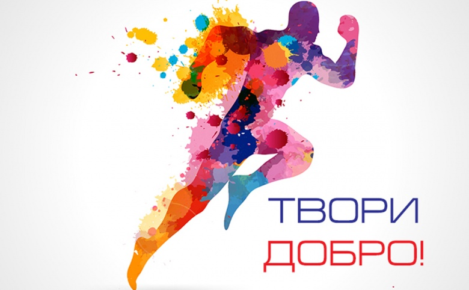
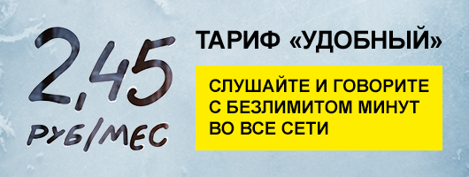

Акции
Благотворительная акция Free Bird «Делать добро так просто» в поддержку масштабного проекта по проверке зрения у детей«Я вижу!»

Проект «Я вижу!» реализуется при поддержке Министерства здравоохранения Республики Беларусь и облисполкомов. Он призван организовать своевременную диагностику зрения и оказание офтальмологической помощи детям, проживающим в сельской местности, сделать ее более доступной. Мобильные бригады врачей-офтальмологов посещают детей по месту их учебы и проводят осмотры прямо в школах. Для реализации проекта организаторы оборудовали специальные автомобили, приобрели офтальмологическое оборудование и организовали работу врачей.
На протяжении 2016 и 2017 гг. проект «Я вижу!» реализовывался в 19 районах Могилевской и 14 районах Гомельской областях республики соответственно. Всего за это время было обследовано около 25 тыс. детей.
Все расходы на проект «Я вижу!» оплачиваются за счет средств, собранных компанией Free Bird в ходе традиционной благотворительной рождественской инициативы «Делать добро так просто». В этом году каждое подключение на любой из тарифных планов линеек «Комфорт» и «Комфорт+» в период с 1 по 31 декабря превратится в 5 рублей, которые Free Bird и переведет на специальный благотворительный счет из своей прибыли.
Подключайтесь и участвуйте в рекламной акции «Безлимитные звонки на тарифном плане «Удобный»

С 9 ноября в Free Bird стартует беспрецедентное предложение для всех, кто подключится к тарифу «Удобный» - бесплатные безлимитные разговоры во все сети Беларуси на 60 дней! Помимо безграничных звонков в рамках акции все новые абоненты получат скидку на абонентскую плату в размере 50% в течение первых 90 дней, которая в рамках акции составит всего 2,45 рубля в месяц!
В тариф «Удобный» уже включено 300 минут внутри сети Free Bird для звонков друзьям, родным и близким, а также 300 МБ интернет-трафика.


© 2017 Унитарное предприятие «Фри Бёрд». Все права защищены. Немкович Н.А., Кулак К.И., Шевчик Д., 2018